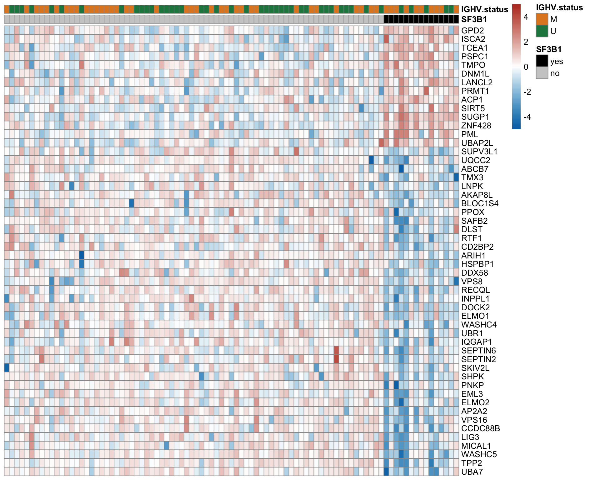
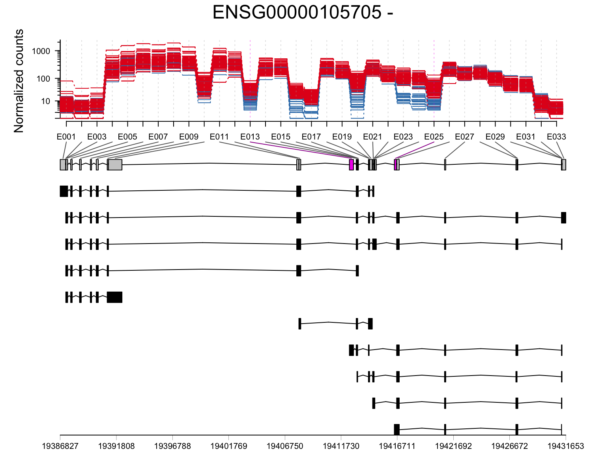
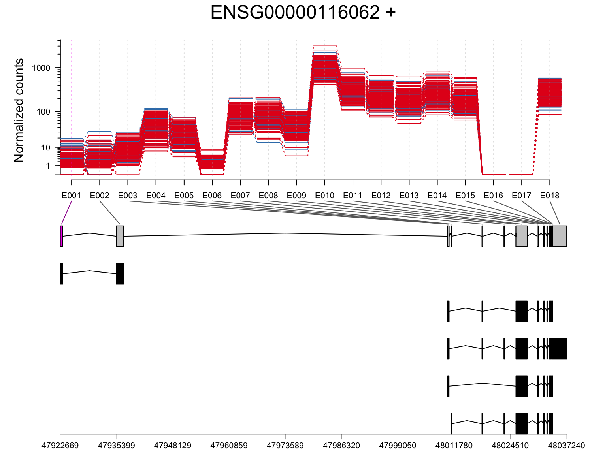
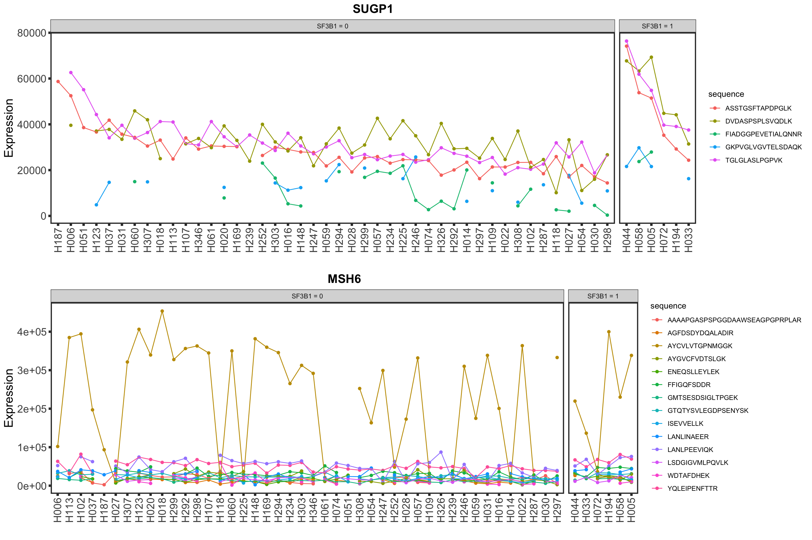
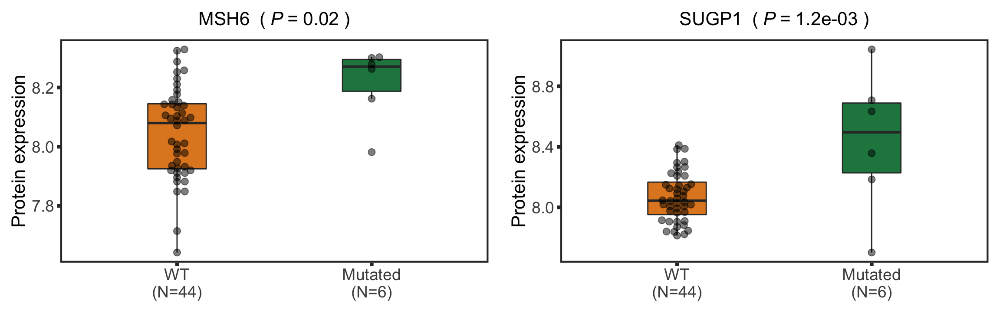
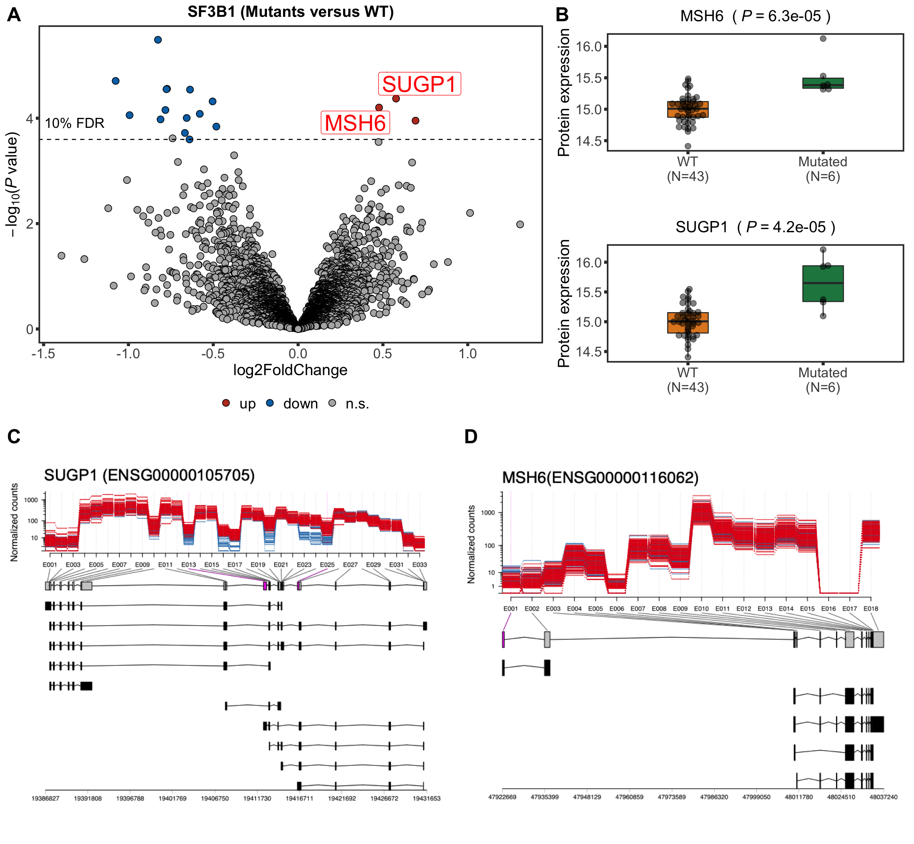

Last updated: 2020-10-09
Checks: 5 2
Knit directory: CLLproteomics_publish/analysis/
This reproducible R Markdown analysis was created with workflowr (version 1.6.2). The Checks tab describes the reproducibility checks that were applied when the results were created. The Past versions tab lists the development history.
The R Markdown is untracked by Git. To know which version of the R Markdown file created these results, you'll want to first commit it to the Git repo. If you're still working on the analysis, you can ignore this warning. When you're finished, you can run wflow_publish to commit the R Markdown file and build the HTML.
Great job! The global environment was empty. Objects defined in the global environment can affect the analysis in your R Markdown file in unknown ways. For reproduciblity it's best to always run the code in an empty environment.
The command set.seed(20200227) was run prior to running the code in the R Markdown file. Setting a seed ensures that any results that rely on randomness, e.g. subsampling or permutations, are reproducible.
Great job! Recording the operating system, R version, and package versions is critical for reproducibility.
To ensure reproducibility of the results, delete the cache directory manuscript_S7_SF3B1_cache and re-run the analysis. To have workflowr automatically delete the cache directory prior to building the file, set delete_cache = TRUE when running wflow_build() or wflow_publish().
Great job! Using relative paths to the files within your workflowr project makes it easier to run your code on other machines.
Great! You are using Git for version control. Tracking code development and connecting the code version to the results is critical for reproducibility.
The results in this page were generated with repository version 3fb50c5. See the Past versions tab to see a history of the changes made to the R Markdown and HTML files.
Note that you need to be careful to ensure that all relevant files for the analysis have been committed to Git prior to generating the results (you can use wflow_publish or wflow_git_commit). workflowr only checks the R Markdown file, but you know if there are other scripts or data files that it depends on. Below is the status of the Git repository when the results were generated:
Ignored files:
Ignored: .DS_Store
Ignored: .Rhistory
Ignored: .Rproj.user/
Ignored: analysis/.DS_Store
Ignored: analysis/.Rhistory
Ignored: analysis/figure/
Ignored: analysis/manuscript_S1_Overview_cache/
Ignored: analysis/manuscript_S3_trisomy12_cache/
Ignored: analysis/manuscript_S4_trisomy19_cache/
Ignored: analysis/manuscript_S5_IGHV_cache/
Ignored: analysis/manuscript_S6_del11q_cache/
Ignored: analysis/manuscript_S7_SF3B1_cache/
Ignored: code/.DS_Store
Ignored: code/.Rhistory
Ignored: data/.DS_Store
Ignored: output/.DS_Store
Untracked files:
Untracked: analysis/.trisomy12_norm.pdf
Untracked: analysis/manuscript_S1_Overview.Rmd
Untracked: analysis/manuscript_S2_genomicAssociation.Rmd
Untracked: analysis/manuscript_S3_trisomy12.Rmd
Untracked: analysis/manuscript_S4_trisomy19.Rmd
Untracked: analysis/manuscript_S5_IGHV.Rmd
Untracked: analysis/manuscript_S6_del11q.Rmd
Untracked: analysis/manuscript_S7_SF3B1.Rmd
Untracked: analysis/manuscript_S8_drugResponse_Outcomes.Rmd
Untracked: analysis/manuscript_S9_STAT2.Rmd
Untracked: code/utils.R
Untracked: data/Fig1A.png
Untracked: data/ddsrna_enc.RData
Untracked: data/exprCNV_enc.RData
Untracked: data/gmts/
Untracked: data/patMeta_enc.RData
Untracked: data/pepCLL_lumos_enc.RData
Untracked: data/pheno1000_enc.RData
Untracked: data/proteins_in_complexes
Untracked: data/proteomic_LUMOS_enc.RData
Untracked: data/proteomic_timsTOF_enc.RData
Untracked: data/survival_enc.RData
Untracked: output/MSH6_splicing.svg
Untracked: output/SUGP1_splicing.svg
Untracked: output/deResList.RData
Untracked: output/deResList_timsTOF.RData
Untracked: output/dxdCLL.RData
Untracked: output/dxdCLL2.RData
Untracked: output/splicingResults.RData
Unstaged changes:
Modified: analysis/_site.yml
Deleted: analysis/analysisSF3B1.Rmd
Deleted: analysis/comparePlatforms.Rmd
Deleted: analysis/compareProteomicsRNAseq.Rmd
Deleted: analysis/correlateCLLPD.Rmd
Deleted: analysis/correlateGenomic.Rmd
Deleted: analysis/correlateGenomic_removePC.Rmd
Deleted: analysis/correlateMIR.Rmd
Deleted: analysis/correlateMethylationCluster.Rmd
Modified: analysis/index.Rmd
Deleted: analysis/predictOutcome.Rmd
Deleted: analysis/processProteomics_LUMOS.Rmd
Deleted: analysis/processProteomics_timsTOF.Rmd
Deleted: analysis/qualityControl_LUMOS.Rmd
Deleted: analysis/qualityControl_timsTOF.Rmd
Note that any generated files, e.g. HTML, png, CSS, etc., are not included in this status report because it is ok for generated content to have uncommitted changes.
There are no past versions. Publish this analysis with wflow_publish() to start tracking its development.
library(limma)
library(DESeq2)
library(proDA)
library(cowplot)
library(pheatmap)
library(ggbeeswarm)
library(SummarizedExperiment)
library(tidyverse)
#load datasets
load("../data/patMeta_enc.RData")
load("../data/ddsrna_enc.RData")
load("../data/proteomic_LUMOS_enc.RData")
load("../output/deResList.RData") #precalculated differential expression
protCLL <- protCLL[rowData(protCLL)$uniqueMap,]
source("../code/utils.R")
knitr::opts_chunk$set(echo = TRUE, warning = FALSE, message = FALSE,dev = c("png","pdf"))resList <- filter(resList, Gene == "SF3B1") %>%
mutate(adj.P.Val = adj.P.IHW) %>% #use IHW corrected P-value
mutate(Chr = rowData(protCLL[id,])$chromosome_name)
resList %>% filter(adj.P.Val <= 0.1) %>%
select(name, Chr,logFC, P.Value, adj.P.Val) %>%
mutate_if(is.numeric, formatC, digits=2) %>%
DT::datatable()proList <- filter(resList, !is.na(name), adj.P.Val < 0.1) %>% distinct(name, .keep_all = TRUE) %>% pull(id)
plotMat <- assays(protCLL)[["QRILC"]][proList,]
rownames(plotMat) <- rowData(protCLL[proList,])$hgnc_symbol
colAnno <- filter(patMeta, Patient.ID %in% colnames(protCLL)) %>%
select(Patient.ID, SF3B1, IGHV.status) %>%
arrange(SF3B1) %>%
data.frame() %>% column_to_rownames("Patient.ID")
colAnno$SF3B1 <- ifelse(colAnno$SF3B1 %in% 1, "yes","no")
plotMat <- jyluMisc::mscale(plotMat, censor = 5)
plotMat <- plotMat[,rownames(colAnno)]
annoCol <- list(SF3B1 = c(yes = "black",no = "grey80"),
IGHV.status = c(M = colList[3], U = colList[4]))
pheatmap::pheatmap(plotMat, annotation_col = colAnno, scale = "none", cluster_cols = FALSE,
clustering_method = "ward.D2",
color = colorRampPalette(c(colList[2],"white",colList[1]))(100),
breaks = seq(-5,5, length.out = 101), annotation_colors = annoCol,
show_rownames = FALSE, show_colnames = FALSE,
treeheight_row = 0)
plotTab <- resList
nameList <- c("SUGP1","MSH6")
sf3b1Volcano <- plotVolcano(plotTab, fdrCut =0.1, x_lab="log2FoldChange", posCol = colList[1], negCol = colList[2],
plotTitle = "SF3B1 (Mutants versus WT)", ifLabel = TRUE, labelList = nameList)nameList <- c("SUGP1","MSH6")
protTab <- sumToTidy(protCLL, rowID = "uniprotID", colID = "patID")
plotTab <- protTab %>% filter(hgnc_symbol %in% nameList) %>%
mutate(SF3B1 = patMeta[match(patID, patMeta$Patient.ID),]$SF3B1) %>%
mutate(status = ifelse(SF3B1 %in% 1,"Mutated","WT"),
name = hgnc_symbol) %>%
mutate(status = factor(status, levels = c("WT","Mutated")))
pList <- plotBox(plotTab, pValTabel = resList, y_lab = "Protein expression")
sf3b1Box <- cowplot::plot_grid(plotlist= pList, ncol=1)Processing splicing dataset
library(DEXSeq)
dxdCLL <- dxdCLL[,dxdCLL$diag %in% "CLL"]
dxdCLL$SF3B1 <- factor(patMeta[match(dxdCLL$patID, patMeta$Patient.ID),]$SF3B1)
dxdCLL$trisomy12 <- factor(patMeta[match(dxdCLL$patID, patMeta$Patient.ID),]$trisomy12)
dxdCLL$IGHV <- factor(patMeta[match(dxdCLL$patID, patMeta$Patient.ID),]$IGHV.status)
dxdCLL.sub <- dxdCLL[rowData(dxdCLL)$symbol %in% filter(resList, adj.P.Val < 0.1)$name,
!is.na(dxdCLL$SF3B1) & !is.na(dxdCLL$trisomy12) & !is.na(dxdCLL$IGHV)]dxdCLL.sub$sample <- droplevels(dxdCLL.sub$sample)
dxdCLL.sub$batch <- droplevels(dxdCLL.sub$batch)
dxdCLL.sub$condition <- dxdCLL.sub$SF3B1
formulaFullModel <- ~ sample + exon + condition:exon + IGHV:exon + trisomy12:exon + batch:exon
formulaReducedModel <- ~ sample + exon + IGHV:exon + trisomy12:exon + batch:exon
dxdCLL.sub <- estimateDispersions(dxdCLL.sub, formula = formulaFullModel)
dxdCLL.sub <- testForDEU(dxdCLL.sub, reducedModel = formulaReducedModel,
fullModel = formulaFullModel)
save(dxdCLL.sub, file = "../output/dxdCLL.RData")testID <- c("ENSG00000105705","ENSG00000116062")
dxdCLL.sub2 <- dxdCLL[rowData(dxdCLL)$groupID %in% testID,
!is.na(dxdCLL$SF3B1) & !is.na(dxdCLL$trisomy12) & !is.na(dxdCLL$IGHV)]
dxdCLL.sub2$sample <- droplevels(dxdCLL.sub2$sample)
dxdCLL.sub2$batch <- droplevels(dxdCLL.sub2$batch)
dxdCLL.sub2$condition <- dxdCLL.sub2$SF3B1
formulaFullModel <- ~ sample + exon + condition:exon + IGHV:exon + trisomy12:exon + batch:exon
formulaReducedModel <- ~ sample + exon + IGHV:exon + trisomy12:exon + batch:exon
dxdCLL.sub2 <- estimateDispersions(dxdCLL.sub2, formula = formulaFullModel)
dxdCLL.sub2 <- testForDEU(dxdCLL.sub2, reducedModel = formulaReducedModel,
fullModel = formulaFullModel)
save(dxdCLL.sub2, file = "../output/dxdCLL2.RData")This analysis takes long time. Here we use pre-calulated results
library(DEXSeq)
#load results
load("../output/dxdCLL.RData")
load("../output/dxdCLL2.RData")resDxd1 <- DEXSeqResults(dxdCLL.sub)
resDxd2 <- DEXSeqResults(dxdCLL.sub2)
resTab <- bind_rows(data.frame(resDxd1), data.frame(resDxd2)) %>%
dplyr::filter(pvalue < 0.05) %>%
mutate(symbol = rowData(dds[groupID,])$symbol)
resTab[,c("symbol", "featureID", "groupID", "pvalue", "padj")] symbol featureID groupID pvalue padj
1 TPP2 E015 ENSG00000134900 2.847909e-02 1.000000e+00
2 PML E024 ENSG00000140464 9.856622e-03 1.000000e+00
3 NT5DC1 E016 ENSG00000178425 7.704909e-03 1.000000e+00
4 SUGP1 E013 ENSG00000105705 1.281459e-14 3.139574e-13
5 SUGP1 E025 ENSG00000105705 9.745709e-25 4.775397e-23
6 MSH6 E001 ENSG00000116062 2.021998e-05 3.302597e-04Two genes pass 10% FDR, SUGP1 and MSH6
plotDEXSeq(resDxd2, "ENSG00000105705", displayTranscripts = TRUE, legend = FALSE, norCounts = TRUE, expression = FALSE)
plotDEXSeq(resDxd2, "ENSG00000116062", displayTranscripts = TRUE, legend = FALSE, norCounts = TRUE, expression = FALSE)
load("../data/pepCLL_lumos_enc.RData")stratifier <- "SF3B1"
plotList <- lapply(nameList, function(n) {
mutStatus <- as.character(patMeta[match(colnames(pepCLL), patMeta$Patient.ID),][[stratifier]])
names(mutStatus) <- colnames(pepCLL)
plotPep(pepCLL, n, type = "count", stratifier = stratifier, mutStatus = mutStatus)
})
cowplot::plot_grid(plotlist = plotList, ncol=1)
Load timsTOF data
load("../data/proteomic_timsTOF_enc.RData")
load("../output/deResList_timsTOF.RData")resList <- dplyr::filter(resList, Gene == "SF3B1") %>%
mutate(adj.P.Val = adj.P.IHW) %>% #use IHW corrected P-value
mutate(Chr = rowData(protCLL[id,])$chromosome_name)protTab <- sumToTidy(protCLL, rowID = "uniprotID", colID = "patID")
plotTab <- protTab %>% filter(hgnc_symbol %in% nameList) %>%
mutate(SF3B1 = patMeta[match(patID, patMeta$Patient.ID),]$SF3B1) %>%
mutate(status = ifelse(SF3B1 %in% 1,"Mutated","WT"),
name = hgnc_symbol) %>%
mutate(status = factor(status, levels = c("WT","Mutated")))
pList <- plotBox(plotTab, pValTabel = resList)
cowplot::plot_grid(plotlist= pList, ncol=2)
spliceSUGP1 <- ggdraw() + draw_image("../output/SUGP1_splicing.svg")
spliceMSH6 <- ggdraw() + draw_image("../output/MSH6_splicing.svg")
upRow <- plot_grid(sf3b1Volcano, sf3b1Box, rel_widths = c(0.6,0.4),
ncol=2, labels = c("A","B"), label_size = 20)
downRow <- plot_grid(spliceSUGP1, spliceMSH6, ncol=2, labels = c("C","D"), label_size = 20)
plot_grid(upRow, downRow, ncol=1, rel_heights = c(0.5,0.5))
#ggsave("test.pdf", width = 13, height = 12)
sessionInfo()R version 3.6.0 (2019-04-26)
Platform: x86_64-apple-darwin15.6.0 (64-bit)
Running under: macOS 10.15.6
Matrix products: default
BLAS: /Library/Frameworks/R.framework/Versions/3.6/Resources/lib/libRblas.0.dylib
LAPACK: /Library/Frameworks/R.framework/Versions/3.6/Resources/lib/libRlapack.dylib
locale:
[1] en_US.UTF-8/en_US.UTF-8/en_US.UTF-8/C/en_US.UTF-8/en_US.UTF-8
attached base packages:
[1] parallel stats4 stats graphics grDevices utils datasets
[8] methods base
other attached packages:
[1] DEXSeq_1.32.0 RColorBrewer_1.1-2
[3] AnnotationDbi_1.48.0 latex2exp_0.4.0
[5] forcats_0.5.0 stringr_1.4.0
[7] dplyr_1.0.0 purrr_0.3.4
[9] readr_1.3.1 tidyr_1.1.0
[11] tibble_3.0.3 tidyverse_1.3.0
[13] ggbeeswarm_0.6.0 ggplot2_3.3.2
[15] pheatmap_1.0.12 cowplot_1.0.0
[17] proDA_1.1.2 DESeq2_1.26.0
[19] SummarizedExperiment_1.16.1 DelayedArray_0.12.3
[21] BiocParallel_1.20.1 matrixStats_0.56.0
[23] Biobase_2.46.0 GenomicRanges_1.38.0
[25] GenomeInfoDb_1.22.1 IRanges_2.20.2
[27] S4Vectors_0.24.4 BiocGenerics_0.32.0
[29] limma_3.42.2
loaded via a namespace (and not attached):
[1] shinydashboard_0.7.1 tidyselect_1.1.0 RSQLite_2.2.0
[4] htmlwidgets_1.5.1 grid_3.6.0 maxstat_0.7-25
[7] munsell_0.5.0 codetools_0.2-16 statmod_1.4.34
[10] DT_0.14 withr_2.2.0 colorspace_1.4-1
[13] knitr_1.29 rstudioapi_0.11 ggsignif_0.6.0
[16] labeling_0.3 git2r_0.27.1 slam_0.1-47
[19] GenomeInfoDbData_1.2.2 hwriter_1.3.2 KMsurv_0.1-5
[22] bit64_0.9-7 farver_2.0.3 rprojroot_1.3-2
[25] vctrs_0.3.1 generics_0.0.2 TH.data_1.0-10
[28] xfun_0.15 BiocFileCache_1.10.2 sets_1.0-18
[31] R6_2.4.1 locfit_1.5-9.4 bitops_1.0-6
[34] fgsea_1.12.0 assertthat_0.2.1 promises_1.1.1
[37] scales_1.1.1 multcomp_1.4-13 nnet_7.3-14
[40] beeswarm_0.2.3 gtable_0.3.0 sandwich_2.5-1
[43] workflowr_1.6.2 rlang_0.4.7 genefilter_1.68.0
[46] splines_3.6.0 rstatix_0.6.0 acepack_1.4.1
[49] broom_0.7.0 checkmate_2.0.0 yaml_2.2.1
[52] abind_1.4-5 modelr_0.1.8 crosstalk_1.1.0.1
[55] backports_1.1.8 httpuv_1.5.4 Hmisc_4.4-0
[58] tools_3.6.0 relations_0.6-9 ellipsis_0.3.1
[61] gplots_3.0.4 Rcpp_1.0.5 progress_1.2.2
[64] base64enc_0.1-3 visNetwork_2.0.9 zlibbioc_1.32.0
[67] RCurl_1.98-1.2 prettyunits_1.1.1 openssl_1.4.2
[70] ggpubr_0.4.0 rpart_4.1-15 zoo_1.8-8
[73] haven_2.3.1 ggrepel_0.8.2 cluster_2.1.0
[76] exactRankTests_0.8-31 fs_1.4.2 magrittr_1.5
[79] magick_2.4.0 data.table_1.12.8 openxlsx_4.1.5
[82] reprex_0.3.0 survminer_0.4.7 mvtnorm_1.1-1
[85] hms_0.5.3 shinyjs_1.1 mime_0.9
[88] evaluate_0.14 xtable_1.8-4 XML_3.98-1.20
[91] rio_0.5.16 jpeg_0.1-8.1 readxl_1.3.1
[94] gridExtra_2.3 biomaRt_2.42.1 compiler_3.6.0
[97] KernSmooth_2.23-17 crayon_1.3.4 htmltools_0.5.0
[100] mgcv_1.8-31 later_1.1.0.1 Formula_1.2-3
[103] geneplotter_1.64.0 lubridate_1.7.9 DBI_1.1.0
[106] dbplyr_1.4.4 rappdirs_0.3.1 MASS_7.3-51.6
[109] jyluMisc_0.1.5 Matrix_1.2-18 car_3.0-8
[112] cli_2.0.2 marray_1.64.0 gdata_2.18.0
[115] igraph_1.2.5 pkgconfig_2.0.3 km.ci_0.5-2
[118] foreign_0.8-71 piano_2.2.0 xml2_1.3.2
[121] annotate_1.64.0 vipor_0.4.5 XVector_0.26.0
[124] drc_3.0-1 rvest_0.3.5 digest_0.6.25
[127] Biostrings_2.54.0 rmarkdown_2.3 cellranger_1.1.0
[130] fastmatch_1.1-0 survMisc_0.5.5 htmlTable_2.0.1
[133] curl_4.3 Rsamtools_2.2.3 shiny_1.5.0
[136] gtools_3.8.2 nlme_3.1-148 lifecycle_0.2.0
[139] jsonlite_1.7.0 carData_3.0-4 askpass_1.1
[142] fansi_0.4.1 pillar_1.4.6 lattice_0.20-41
[145] fastmap_1.0.1 httr_1.4.1 plotrix_3.7-8
[148] survival_3.2-3 glue_1.4.1 zip_2.0.4
[151] png_0.1-7 bit_1.1-15.2 stringi_1.4.6
[154] blob_1.2.1 latticeExtra_0.6-29 caTools_1.18.0
[157] memoise_1.1.0